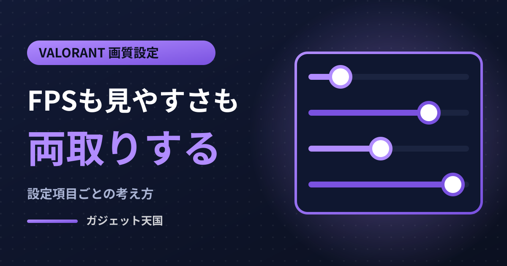

VALORANTの画質設定｜FPSを安定させて敵を見やすくする考え方

VALORANTの画質設定は「とりあえず全部最低」でも、ある程度は戦えます。でも、何を下げて何を残すかの理由が分かっていると、FPSの安定と敵の見やすさを両立できます。設定項目ごとの考え方と、変えたあとに確認すべきことをまとめます。
- 🎛️下げていい設定・残す設定
- 📈FPSを安定させるコツ
- 🔍敵を見やすくする考え方
自分で毎日使っている機材だけを、良いところも微妙なところも正直に書いています。
📌 先に結論
VALORANTの画質設定は「綺麗さ」より 「FPSの安定」と「敵の見やすさ」 で決めます。考え方はシンプルで、敵の視認性に関係ない負荷は下げ、敵を見やすくする設定だけ残す。
そのうえで一番大事なのは、設定を変えたら 実戦でFPSが落ち込まないか確認すること。射撃場で高いFPSが出ても、スキルが飛び交う実戦で大きく落ちるなら意味がありません。
なぜ画質設定で勝率が変わるのか
画質設定が撃ち合いに効く理由は2つだけです。
- FPSの安定：フレームレートが高く安定しているほど、敵の動きが滑らかに見え、入力から画面に反映されるまでの遅れも小さくなります。240Hzモニターを使っているなら、240FPS前後を落とさず維持できるかが肝です。
- 敵の見やすさ：光のにじみや画面のゆがみといった演出は、雰囲気は出ますが敵の輪郭をぼかします。競技目線では邪魔になりがちです。
逆に言えば、この2つに関係しない設定は、好みで決めて構いません。
設定を変える前に：今のFPSを測る
いきなり設定をいじると、何が効いたのか分からなくなります。まず現状を記録します。
- ゲーム内の設定で FPS表示（パフォーマンス統計） をオンにする。
- 射撃場ではなく、デスマッチやアンレートで数試合プレイし、普段のFPSと、撃ち合い・スキル演出時に落ち込んだときのFPSをメモする。
- 設定は 1項目ずつ 変えて、同じ条件で比べる。
グラフィック設定：項目ごとの考え方
VALORANTのビデオ設定にある主な項目を、競技目線で整理します。メニューの表記はゲームのバージョンや言語設定で変わることがあるため、括弧内に英語名も併記しています。
| 項目 | 競技目線の考え方 |
|---|---|
| マルチスレッドレンダリング（Multithreaded Rendering） | 多くの環境でオン推奨。CPUの複数コアを使えるためFPSが伸びやすい。まれに不安定になるPCもあるので、オン/オフで実測比較を。 |
| マテリアル・テクスチャ・ディテール品質（Material / Texture / Detail Quality） | 見た目の細かさ。敵の視認性への影響は小さいため、FPSが足りないなら真っ先に下げる。 |
| UI品質（UI Quality） | インターフェースの表示品質。負荷は小さめ。好みでOK。 |
| ビネット（Vignette） | 画面の端を暗くする演出。端が見えにくくなるのでオフ推奨。 |
| 垂直同期（VSync） | オフ推奨。オンにすると入力遅延が増えやすい。画面のズレ（ティアリング）が気になる場合は別の方法で対処を。 |
| アンチエイリアス（Anti-Aliasing） | 輪郭のギザギザを抑える。重い設定ほどFPSを食う。FPSに余裕がなければ軽い設定かオフ。 |
| 異方性フィルタリング（Anisotropic Filtering） | 斜めから見た床や壁の鮮明さ。負荷は比較的小さい。FPSに余裕があれば上げても可。 |
| 鮮明度の向上（Improve Clarity） | 画面のくっきり感を上げる。敵の輪郭が見やすくなると感じる人が多い。FPSへの影響を見て判断。 |
| ブルーム・歪み（Bloom / Distortion） | 光のにじみ・空間のゆがみ演出。敵の輪郭をぼかすのでオフ推奨。 |
| 一人称視点の影（Cast Shadows） | 見た目の演出。オフでFPSを稼げる。 |
迷ったら、「演出系はオフ、細かさ系は下げる、くっきり系は残す」と覚えておけば大きく外しません。
入力遅延まわりの設定
NVIDIA Reflex（GeForce使用時）
NVIDIA製GPUを使っているなら、低遅延モード（NVIDIA Reflex Low Latency）を有効にすると、入力から表示までの遅れを抑えやすくなります。「オン」と「オン + ブースト」があり、ブーストは消費電力が増える代わりにさらに遅延を詰める設定です。まずは「オン」で試し、実測で比べてください。
FPS上限
FPSに上限をかける設定もあります。上限を低くしすぎると高リフレッシュレートのモニターを活かせないので、上限をかけるならモニターのHz以上を目安にします。メニュー画面や非アクティブ時だけ上限をかけて、発熱や電気代を抑える使い方も便利です。
敵を見やすくする設定：敵のハイライトカラー
画質とは別に、敵のハイライトカラー（敵の輪郭の色）も視認性に直結します。初期設定の赤以外に、黄色や紫などを選べます。
マップの壁や背景には赤っぽい色も多いため、黄色や紫の方が背景から浮いて見えると感じる人は少なくありません。どの色が見やすいかは目やモニターによって違うので、射撃場とデスマッチで実際に切り替えて、自分が一番早く気づける色を選んでください。
モニター・Windows側も確認する
ゲーム内をいくら詰めても、外側の設定が間違っていると台無しです。最低限ここだけは確認します。
- Windowsのリフレッシュレート：ディスプレイの詳細設定で、モニターの最大Hz（例：240Hz）が選ばれているか。接続しただけでは60Hzのままのことがあります。
- 接続端子とケーブル：高Hzに対応した端子・ケーブルで接続しているか。
- 表示モード：多くの場合「フルスクリーン」が遅延面で有利とされます。
240Hzモニター選びの注意点は VALORANT向け240Hzモニターの選び方、144Hzとの体感差は VALORANTに240Hzモニターは必要か で詳しく書いています。
❓ よくある質問
全部最低設定にするのが一番強い?
必ずしもそうではありません。FPSに余裕があるなら、鮮明度の向上のように敵が見やすくなる設定は残した方が有利なこともあります。目標は「最低設定」ではなく「FPSが安定し、敵が見やすい状態」です。
プロの設定をそのまま真似していい?
参考にはなりますが、PCの性能やモニターが違えば最適解も変わります。プロと同じ設定にしてFPSが落ち込むなら本末転倒です。必ず自分の環境で実測して調整してください。
設定を変えても体感が変わらない
Windows側のリフレッシュレートが60Hzのままになっている、FPS上限が低く設定されている、といった外側の原因がよくあります。上の「モニター・Windows側も確認する」を一度見直してください。それでもFPSが出ない場合は FPSが出ないときの確認順 へ。
まとめ
VALORANTの画質設定は、演出系はオフ・細かさ系は下げる・くっきり系は残す、そして 実戦でFPSが落ち込まないか確かめる。これだけで撃ち合いの安定感は変わります。
設定は一度決めたら終わりではなく、PCやモニターを変えたとき、大型アップデートの後にも見直すのがおすすめです。
※本記事の設定項目名・選択肢は2026年11月時点の情報をもとにしています。ゲームのアップデートで名称や内容が変わる場合があります。効果はPC構成によって異なるため、必ずご自身の環境で実測して調整してください。